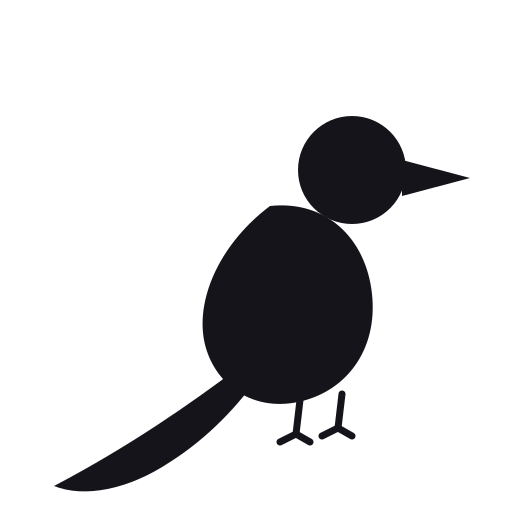
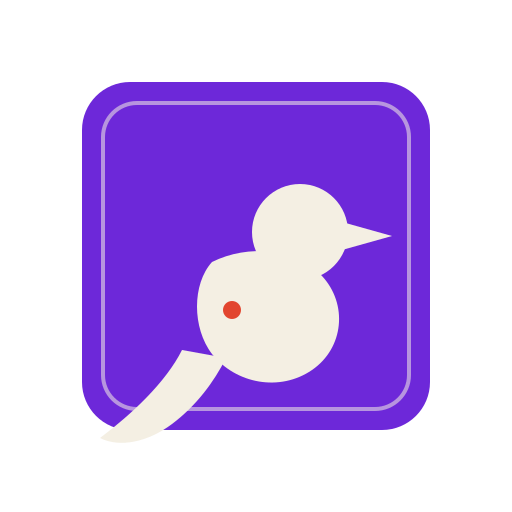
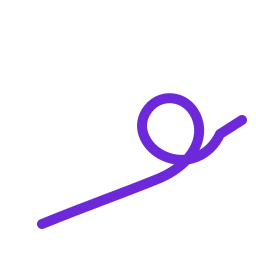
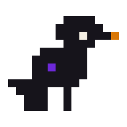
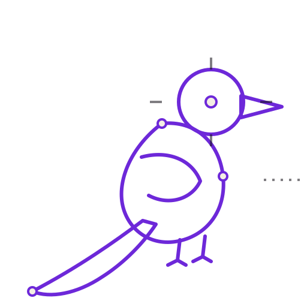
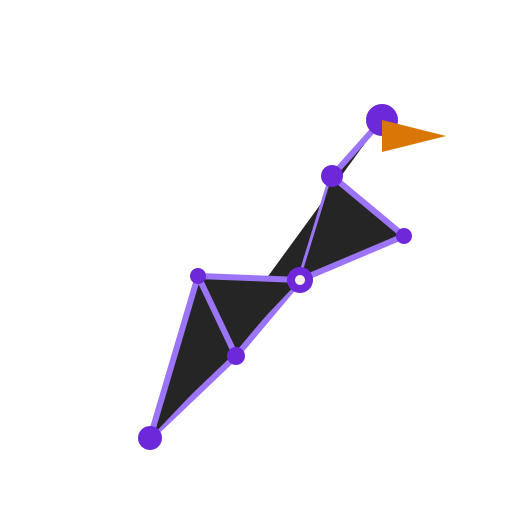
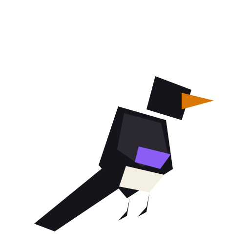
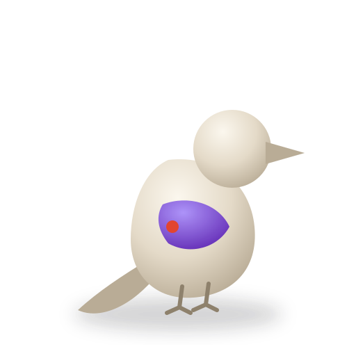
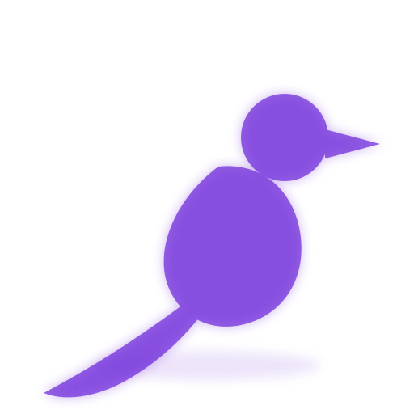

01 · SILHOUETTE
mark
No face
Solid ink magpie. No eyes, no scarf, no proof page. Only shape and tail.

44
24
2026: anti-cute, icon-first. Risk: cold.
Each direction changes at least two structural axes: face, body, material, role, motion or presence. All are birds. None is the round cute mascot with a scarf and a page.
Solid ink magpie. No eyes, no scarf, no proof page. Only shape and tail.

Bird is a cutout in a solid violet stamp. One vermilion dot. No character.

The bird is an M: beak and tail are part of the letter. No separate mascot.
One continuous violet line. No fill, no eyes, no seal. Draws itself.

Two colors, four frames, no curves. A bird from the terminal era.

Technical lines, joints, dimension marks. A bird as a drawing, not a character.

7 nodes and 7 edges. The bird reassembles as the state changes.

Only planes and folds. No face, no scarf. A paper object, not a mascot.

A small glazed sculpture with a red stamp. Not a drawing; an artifact.

Only a shadow on the route. No eyes, no body, no interaction. Atmosphere.
